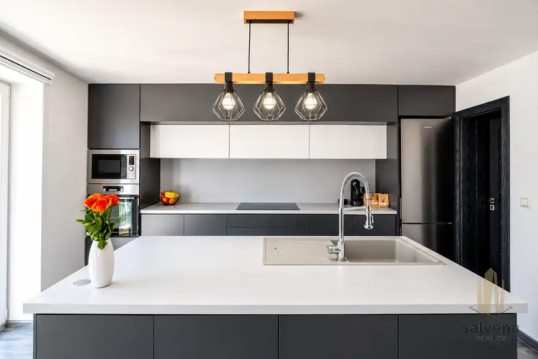
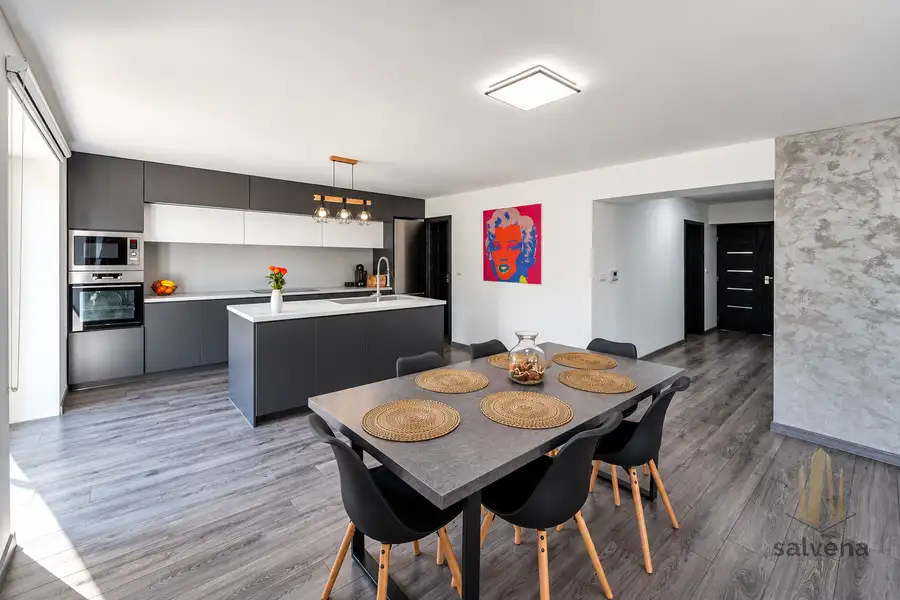
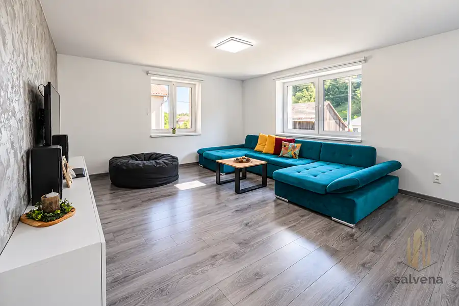
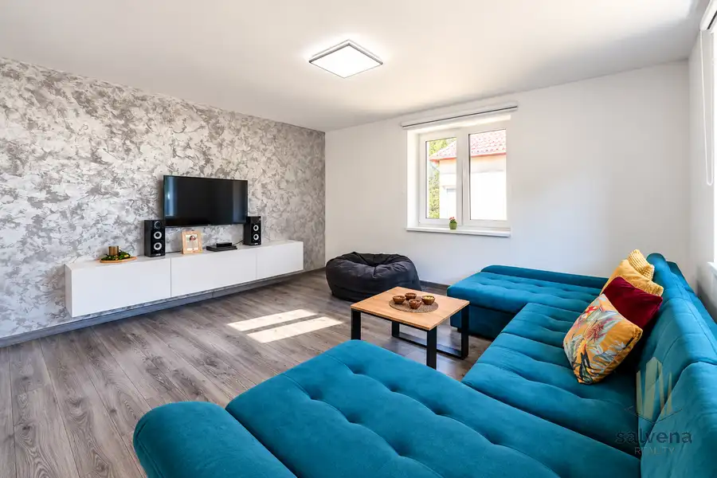
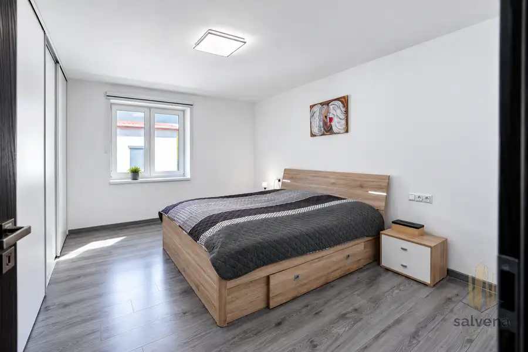
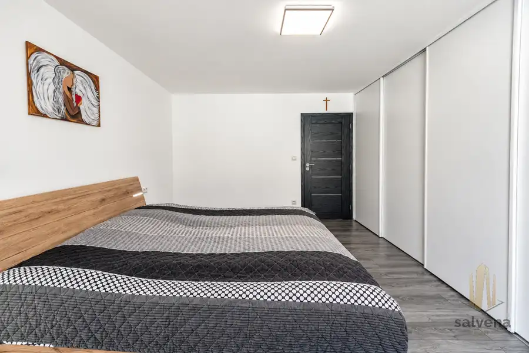
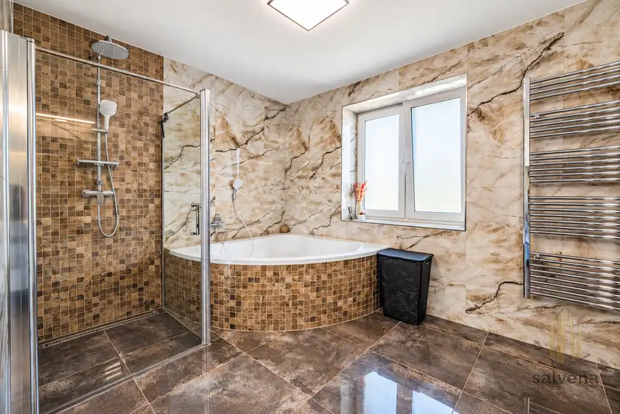
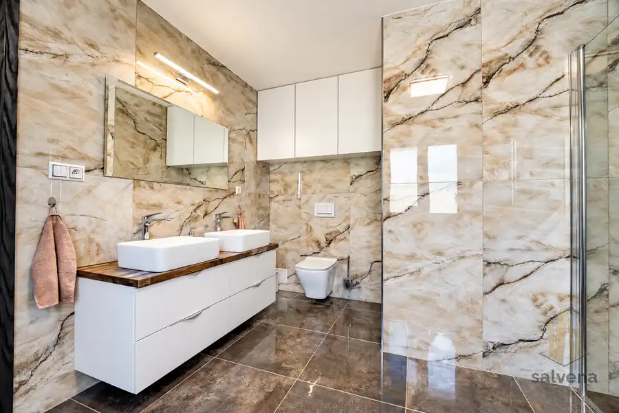

Fričovce – rodinný dom so zrekonštruovaným podlažím, garážou a pozemkom 724 m²
Fričovce









- Plocha250 m²
- StavČiastočná rekonštrukcia
O nehnuteľnosti
Salvena Reality ponúka na predaj rodinný dom vo Fričovciach. Hlavné obytné podlažie prešlo kompletnou rekonštrukciou. Dom zároveň ponúka podkrovie na dokončenie a suterén s možnosťou ďalšieho využitia po rekonštrukcii.Nehnuteľnosť je vhodná pre záujemcu, ktorý hľadá zrekonštruovanú obytnú časť a ďalšie priestory si chce upraviť podľa svojich potrieb.Základné údaje:- pozemok: 724 m²,- zastavaná plocha rodinného domu: 128 m²,- členenie domu: suterén, hlavné obytné podlažie a podkrovie,- hospodárska budova s garážou, kôlňou a pivnicou,Obytné podlažie ponúka otvorený denný priestor s kuchyňou, jedálňou a obývacou izbou. Kuchynská linka je doplnená ostrovčekom. Súčasťou podlažia je priestranná spálňa a kúpeľňa s rohovou vaňou, sprchovacím kútom, dvoma umývadlami a WC.Dom má zateplenie, plastové okná a novú strechu. Vybavený je teplovodným podlahovým kúrením a plynovým kotlom.Podkrovie je určené na dokončenie a môže rozšíriť obytnú časť domu. Suterén aktuálne slúži ako skladové a technické zázemie. Pri jeho zmene na iné využitie je potrebné počítať s rekonštrukciou. Hotové bývanie sa teda týka hlavného obytného podlažia.Na pozemku stojí pôvodná hospodárska budova s garážou, kôlňou a pivnicou, ktorá poskytuje ďalšie úložné a úžitkové priestory.Výhodou lokality je blízke napojenie na diaľnicu D1 a dostupnosť smerom do Prešova. Okolie obce tvorí prírodné prostredie s lesmi a kopcami.Pre bližšie informácie a dohodnutie osobnej obhliadky kontaktujte:Tomáš AmrichTelefón: +421 917 993 339E-mail: tomas.amrich@salvena.skSalvena Reality – realitná kancelária Prešov a Košice.Vaša Salvena Reality – sme tu pre vás.
Parametre
- Doprava
- Diaľnica, Cesta
- Druh
- Rodinný dom
- Dátum zverejnenia
- 17. 09. 2026
- Energetický certifikát budovy
- nie je
- Energie
- 200
- Orientácia
- Západná, Východná
- Plocha pozemku
- 724 m²
- Podpivničenie
- Úplné
- Počet kúpeľní
- 1
- Počet nadzemných podlaží
- 2
- Počet podzemných podlaží
- 1
- Počet spální
- 1
- Príprava teplej vody
- Súbežne s ÚK
- Prístupová komunikácia
- Asfaltová
- Rok poslednej rekonštrukcie
- 2020
- Stav nehnuteľnosti
- Čiastočná rekonštrukcia
- Telekomunikácie
- Internet
- Terén pozemku
- Rovinatý
- Typ
- Predaj
- Typ konštrukcie
- Hlinená, Drevená, Zmiešaná, Pórobetón (Ytong)
- Vybavenie
- Balkón, Terasa, Pivnica, Predzáhradka, Garáž, Záhrada, Dielňa
- Vybavenie objektu
- Štandardné
- Vykurovanie
- Podlahové
- Zariadenie
- Čiastočne zariadené
- Zastavaná plocha
- 125 m²
- Zdroj tepla
- Zemný plyn
- Úžitková plocha
- 250 m²